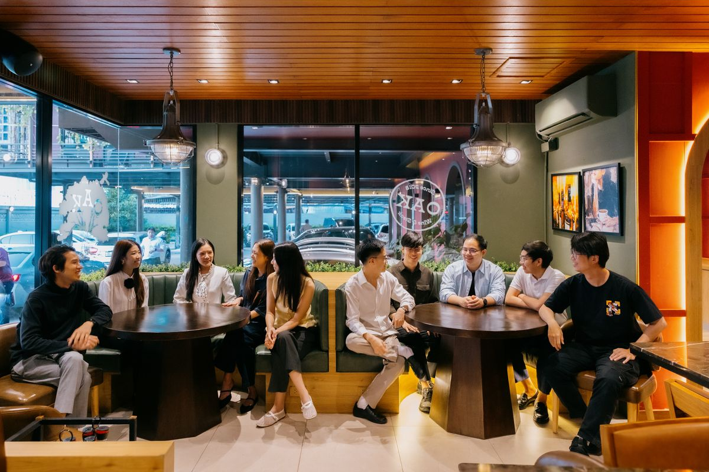
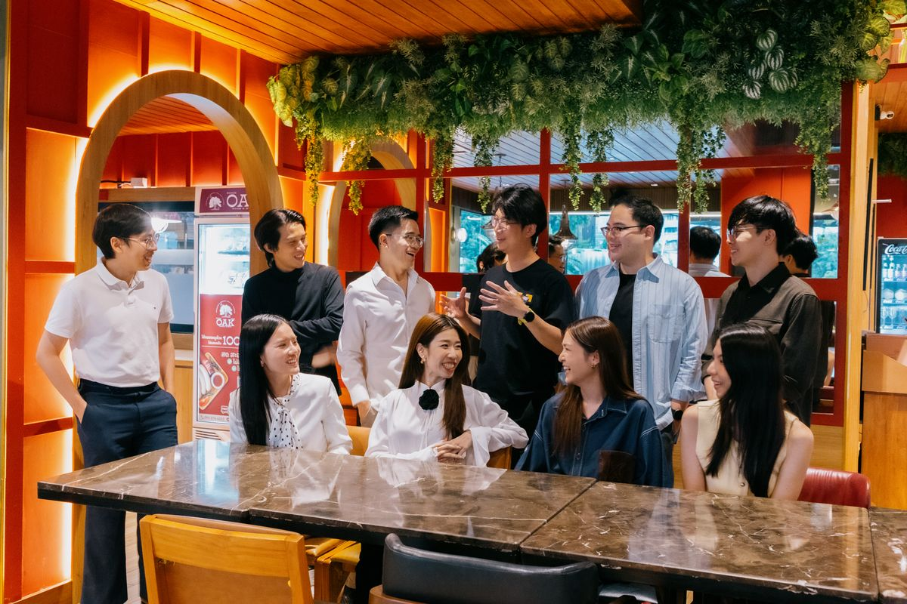
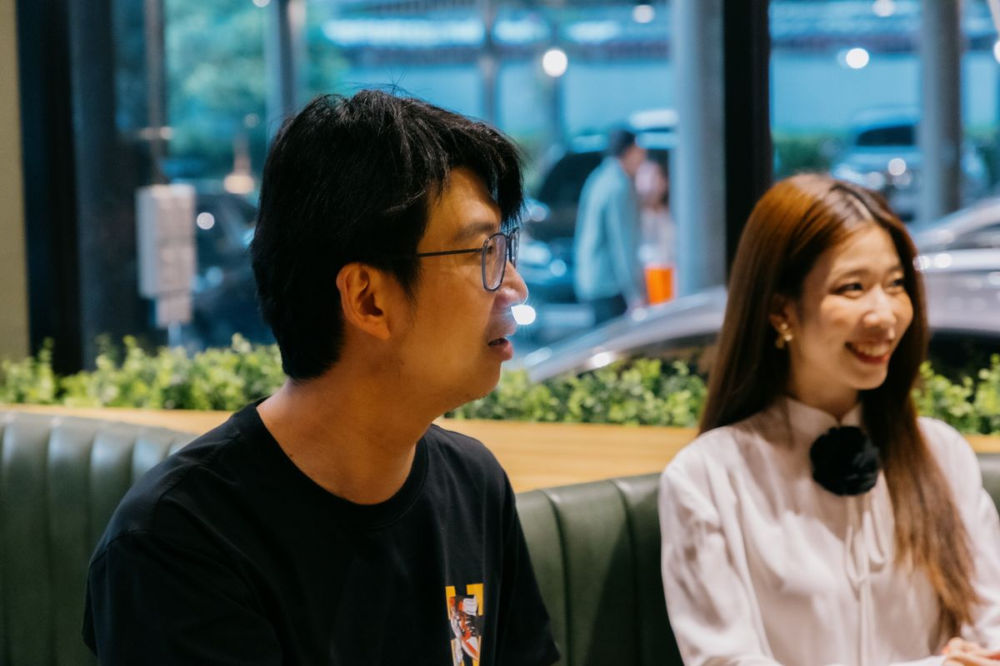
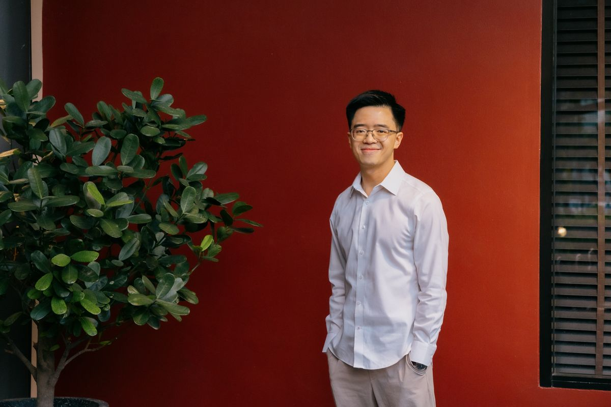
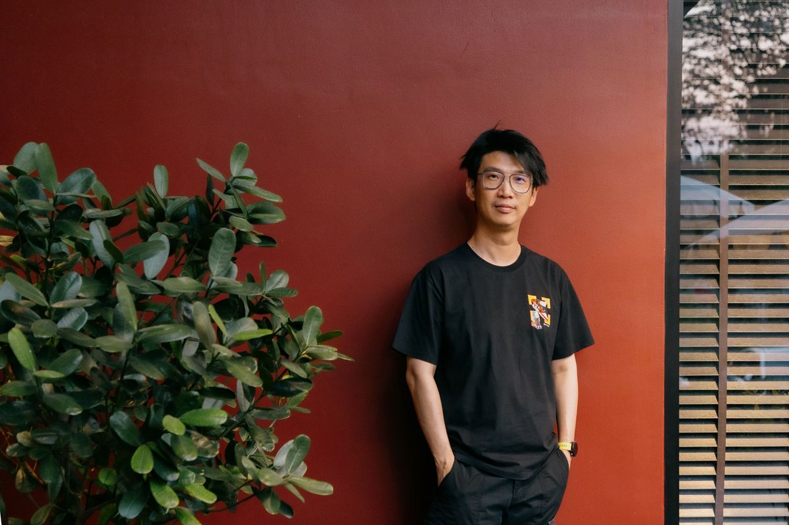
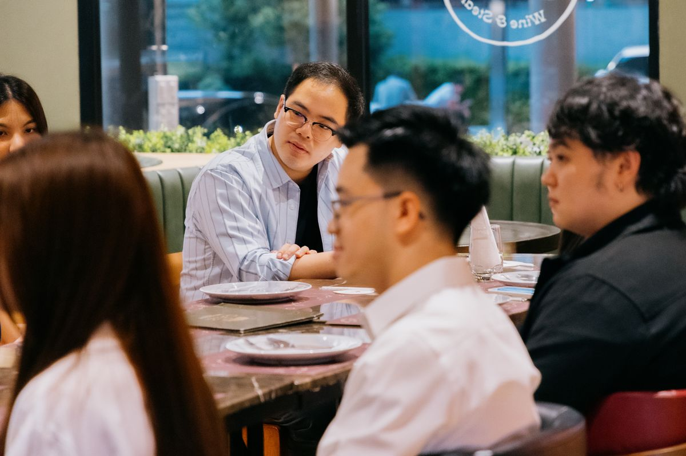
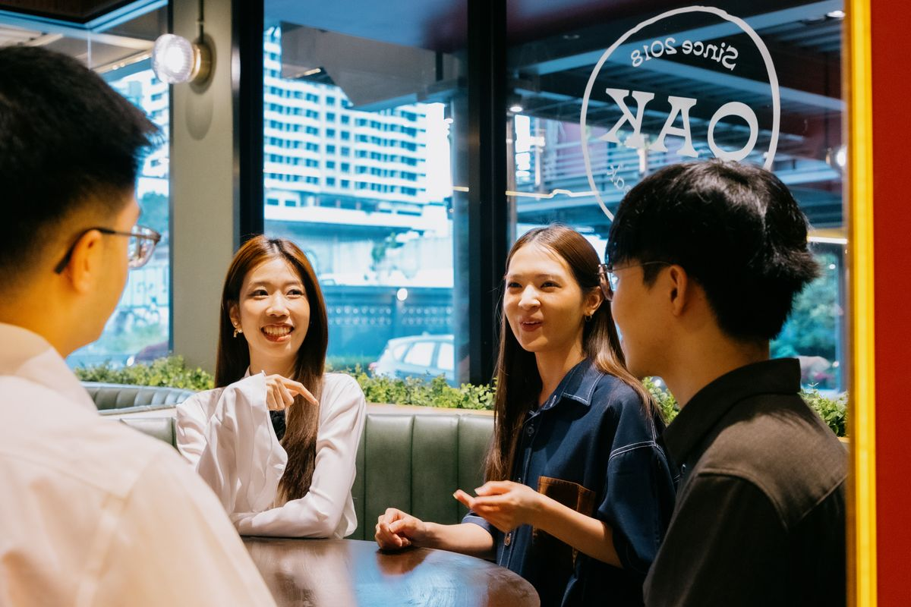

Our Journey & Philosophy
About Flow's Table
Behind the scenes of the no-agenda dinner circle connecting builders, dreamers, and mentors.
The Story Behind the Table
Every legendary story begins around a dinner table. In 2025, Mac Nattapong Vivattanaprasert, a second-generation entrepreneur building the modern shrine brand Aviva Spirit, set out on a simple mission: to learn from the brightest minds in business and finance. In a fast-changing world, he sought the wisdom of those who had successfully navigated market cycles before him.
At a business seminar, Mac crossed paths with two of Thailand’s most respected Value Investors: Mi Tiwa Chinshadaphong and Jacky Suthon Singhasitthangkul. Rather than requesting a formal interview or a pitch meeting, Mac did something different. He invited them to share a meal alongside a small circle of ten close friends, setting a relaxed environment where everyone could speak freely.
What followed was an inspiring five-hour flow of business insights, life philosophies, and personal wisdom. The chemistry was electric, and the sense of fulfillment was mutual. Recognizing the rare value of this gathering, Mi suggested they make it a quarterly tradition. Thus, Flow's Table was born—not as a formal networking group, but as an organic space for authentic human connection.

Distilled wisdom and sincere connections shared around a single dinner table.
The Philosophy of "No Agenda"
In a professional ecosystem dominated by transactional meetings, pitch decks, and rigid schedules, Flow's Table stands as a deliberate exception. Every gathering is run with a simple, foundational rule: **No Agenda**.
“When you have a fixed agenda, you are bound by constraints. You stop listening to the present because you're constantly thinking about the next question,” explains Mac. By letting go of structured goals, the table allows conversations to flow naturally, moving effortlessly from high-level investment strategies and emerging AI trends to personal philosophy, history, astrology, and mental well-being.

A safe space for builders and investors to connect without predefined targets.
It is an ecosystem built on the principles of **positive energy, safety, and mutual respect**. Younger builders have the opportunity to share fresh perspectives on technology, media, and Gen-Z trends with senior leaders. In return, seasoned mentors pass down lessons that cannot be found in books or online videos—distilled wisdom born of decades of trial, failure, and success.
Our Core Team
Mac Nattapong Vivattanaprasert
Co-founder of Aviva Spirit. Acting as the ultimate coordinator, Mac brings diverse professionals together to create the perfect blend of conversation, akin to assembling a championship football squad.
Tin Thinnaphat Ronnarong
An executive strategist with a background in corporate leadership. Tin focuses on structured growth, operational excellence, and bridging high-level strategy with actionable execution.
Ryu Supajak Petchdee
Dedicated to preserving the human connection. Ryu focuses on the psychology of networking, ensuring every guest feels safe and encouraged to share their authentic stories.
Gun Kanyakorn Prasartaporn
Transitioned from a high-pressure corporate career to advocate for mental wellness. Gun leads the "Overflow" spin-off sessions, focusing on mindfulness, wellness, and spirituality.
Dr. Torfan Jiratrakarn (Yu-jung)
A licensed medical doctor passionate about the intersection of medicine, healthtech innovation, and business mindset development.
Jenny Jannisa Kaowaiyakul
A network coordinator specialized in building trusted, long-term relationships and designing collaborative media campaigns for the community.
Scenes from the Sessions





“Unlocking the secrets of Flow’s Table: Why business conversations over a meal always inspire.” Read the full feature article on our origins, community dynamics, and values.
Read Featured ArticlePhotos and story adapted from Live to Life.